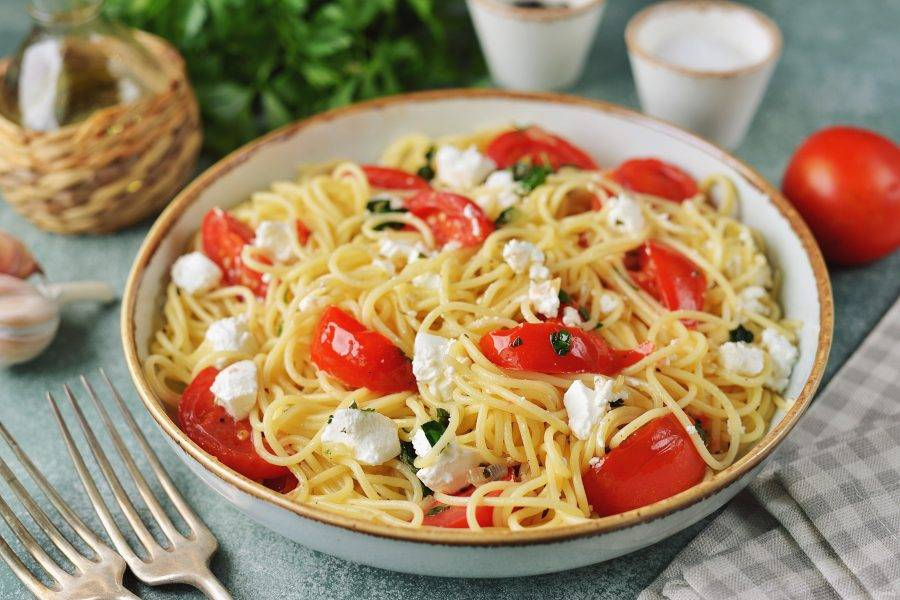
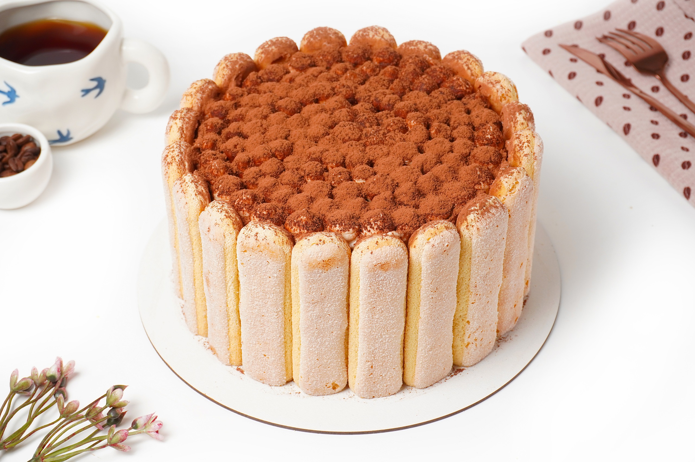
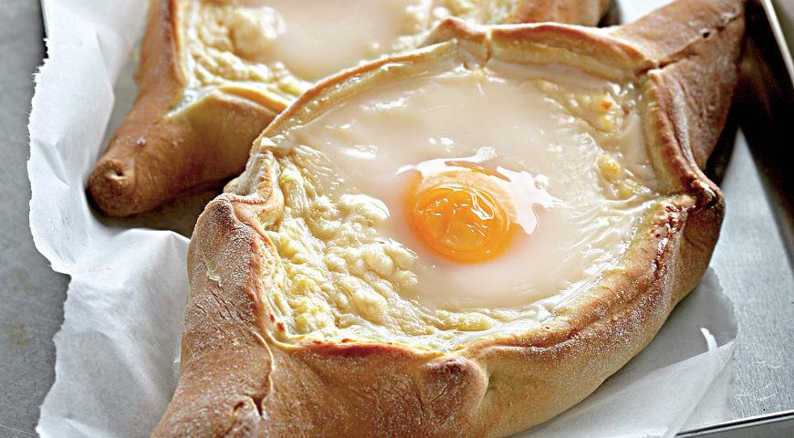
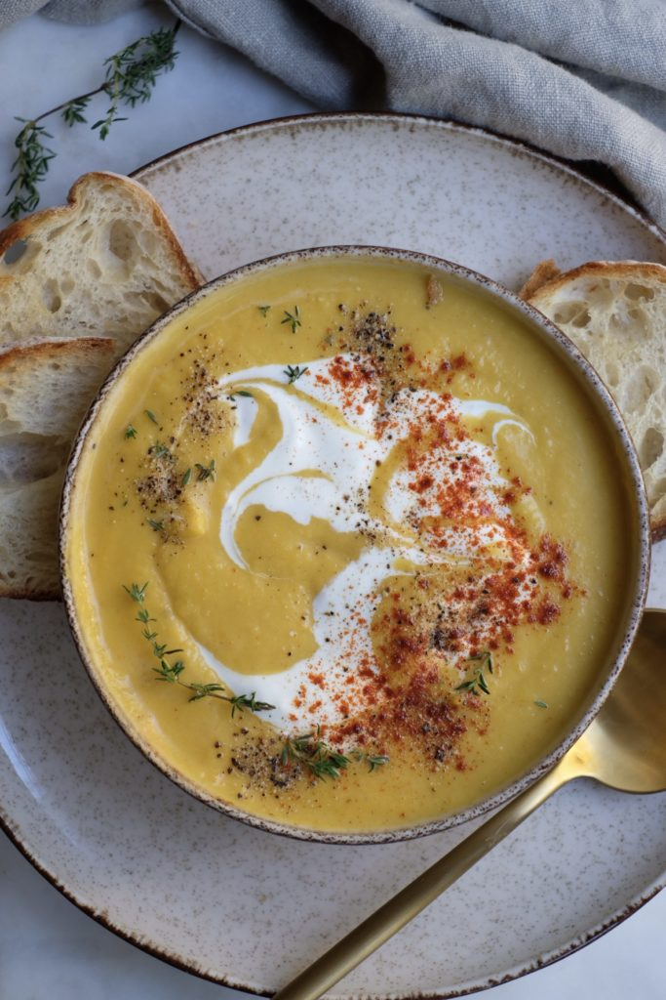
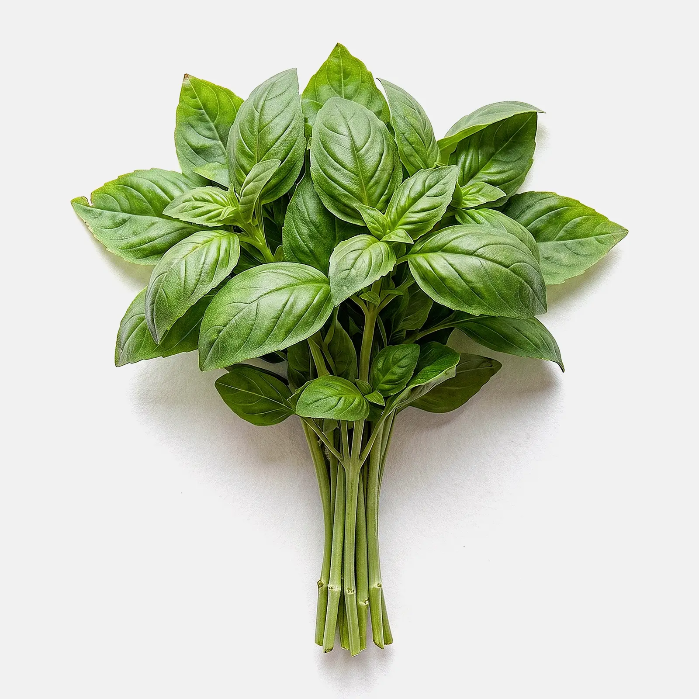
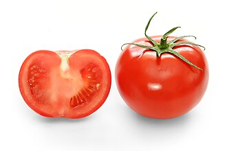
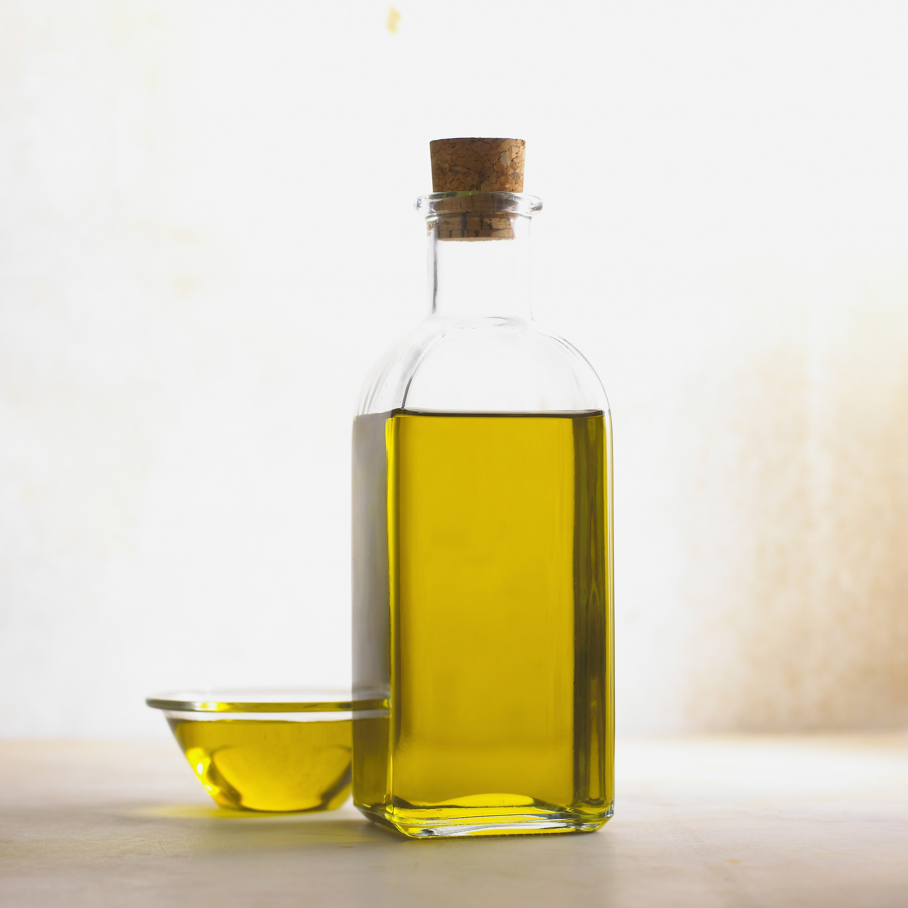
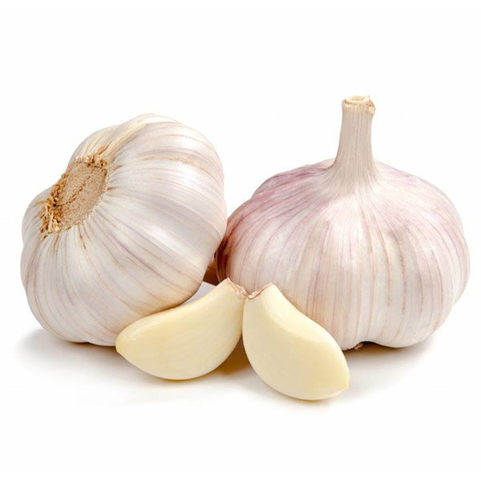
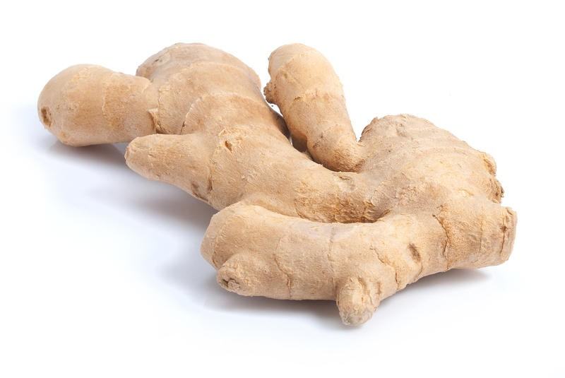
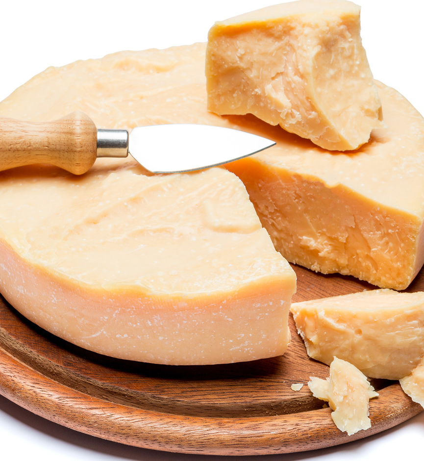

Домашняя паста с томатами

Кулинар, фуд-блогер





Богат антиоксидантами, поддерживает пищеварение и придаёт блюдам свежий аромат.

Источник ликопина и витамина C, полезны для сердца и кожи.

Содержит полезные жиры, снижает риск сердечно-сосудистых заболеваний.

Природный антисептик, укрепляет иммунитет и улучшает вкус блюд.

Помогает при простуде, улучшает кровообращение и добавляет блюдам остроту.

Богат кальцием и белком, придаёт пасте и салатам насыщенный вкус.